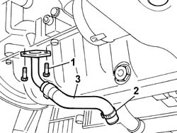

1084B42 ENGINE OIL RETURN PIPE FROM TURBO - R + R
- Path
- Procedures > 10 ENGINE > 1084 ENGINE LUBRICATION > 1084B ENGINE OIL LUBRICATION CIRCUIT > 1084B42 ENGINE OIL RETURN PIPE FROM TURBO - R + R
- Kind
- repair procedure (removal / refitting; the operation number is the code)
- Applies to
- engines: 2.0 16V JTD, 2.2 16V JTD; all production periods
- Interactive page
- https://sloeber94.github.io/elrnDB-fUlss/en/#/179007166
Applies to: engines: 2.0 16V JTD; all production periods
 Removing
Removing
 Refitting
RefittingOp. 7055B54 UNDER-ENGINE GUARD - R R
1. Undo the bolts securing the pipe to the turbocharger.
2. Open the band securing the pipe to the crankcase.
3. Remove the engine oil return pipe from the turbocharger.

Applies to: engines: 2.0 16V JTD; all production periods
Refitting
RemovingPosition the pipe and renew the retaining band.
Tighten the fixing bolts to the recommended torque.
Values in Nm | Fastening | Component | Ø | |
|---|---|---|---|---|
- | 1.2 | Bolt | FASTENING THE PIPE TO THE TURBOCHARGER |
Op. 7055B54 UNDER-ENGINE GUARD - R R
Check the oil level and top up if necessary.
Applies to: engines: 2.2 16V JTD; all production periods
Removing
RefittingOp. 7055B54 UNDER-ENGINE GUARD - R R
1. Undo the bolts securing the pipe to the turbocharger.
2. Open the band securing the pipe to the crankcase.
3. Remove the engine oil return pipe from the turbocharger.
Applies to: engines: 2.2 16V JTD; all production periods
Refitting
RemovingPosition the pipe and renew the retaining band.
Tighten the fixing bolts to the recommended torque.
Values in Nm | Fastening | Component | Ø | |
|---|---|---|---|---|
- | 1.2 | Bolt | FASTENING THE PIPE TO THE TURBOCHARGER |
Op. 7055B54 UNDER-ENGINE GUARD - R R
Check the oil level and top up if necessary. Check the oil level and top up if necessary. Check the oil level and top up if necessary.